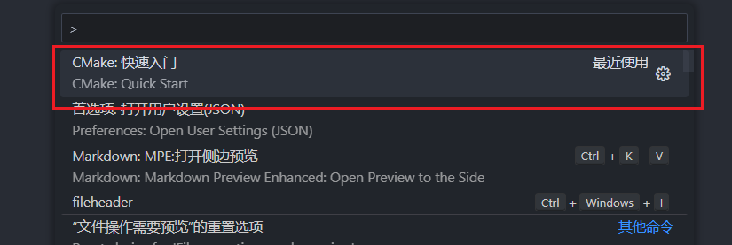
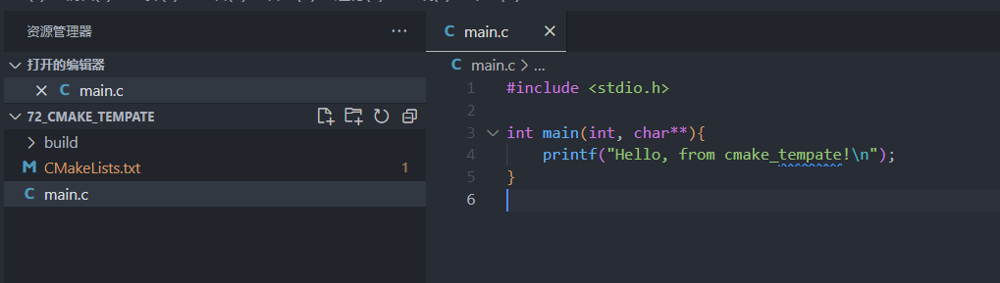
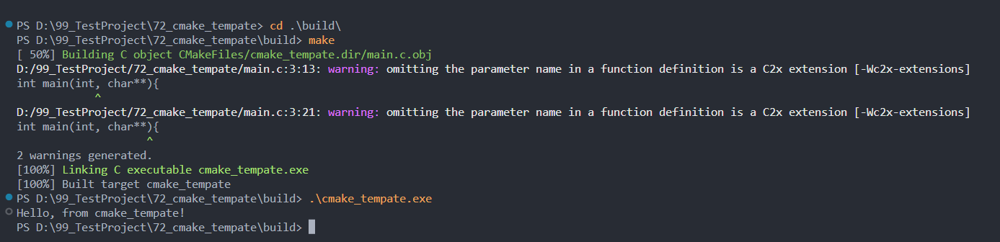
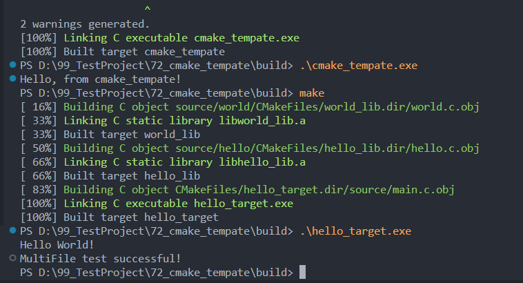
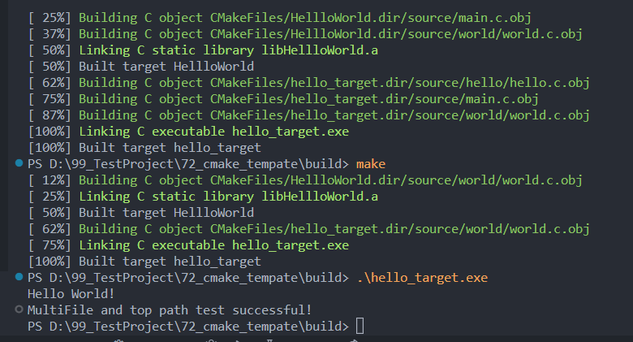

记录windows平台轻量级编译工具链的搭建。
工具链：
MinGW-w64
CMake
VSCode 插件: CMake、CMake Tools
Others
VSCode
GCC
Git
Make
根据需要选择合适版本安装并配置环境变量
若无管理员权限可下载免安装版本，手动配置用户环境变量
CMake快速入门
VSCode: Ctrl + Shift + P进入命令选板，选择CMake快速入门

然后依次选择并配置编译器、CMakeLists.txt(若无，可直接确定跳过)、项目名称、编程语言、生成执行库或可执行程序等。
CMake Tools会自动生成相关文件，并生成一个main.c示例

打开终端，并进入build目录，执行make，完成后，执行生成的可执行文件：
1
2
3
| cd ./build
make
.\cmake_tempate.exe
|

CMake编译多文件目录工程
在上述快速入门工程中，增加source文件夹，并参照如下目录创建文件：
1
2
3
4
5
6
7
8
9
10
11
12
| ./cmake_template
├── CMakeLists.txt
├── source
└── hello
│ ├── CMakeLists.txt
│ ├── hello.c
│ ├── hello.h
├── world
│ ├── CMakeLists.txt
│ ├── world.c
│ ├── world.h
└── main.c
|
main.c
1
2
3
4
5
6
7
8
9
10
|
int main(void)
{
HelloPrint();
WorldPrint();
return 0;
}
|
hello.c
1
2
3
4
5
6
|
void HelloPrint(void)
{
printf("Hello ");
}
|
hello.h
1
| extern void HelloPrint(void);
|
world.c
1
2
3
4
5
6
7
|
void WorldPrint(void)
{
printf("World! \n");
printf("MultiFile test successful! \n");
}
|
world.h
1
| extern void WorldPrint(void);
|
hello文件目录下的CMakeLists.txt
1
2
| aux_source_directory(. DIR_HELLO_SRCS)
add_library(hello_lib ${DIR_HELLO_SRCS})
|
world文件目录下的CMakeLists.txt
1
2
| aux_source_directory(. DIR_WORLD_SRCS)
add_library(world_lib ${DIR_WORLD_SRCS})
|
主目录下的主CMakeLists.txt
1
2
3
4
5
6
7
8
9
10
11
12
13
14
15
16
17
18
19
20
21
| cmake_minimum_required(VERSION 3.0.0)
project(HellloWorld VERSION 0.1.0 LANGUAGES C)
include(CTest)
enable_testing()
aux_source_directory(./source/ DIRSRCS)
include_directories(./source/ ./source/hello ./source/world)
add_subdirectory(./source/hello)
add_subdirectory(./source/world)
add_executable(hello_target ${DIRSRCS})
target_link_libraries(hello_target hello_lib world_lib)
set(CPACK_PROJECT_NAME ${PROJECT_NAME})
set(CPACK_PROJECT_VERSION ${PROJECT_VERSION})
include(CPack)
|
编辑完成后，在build目录下执行make:
1
2
3
| cd ./build
make
.\cmake_tempate.exe
|

单CMakeLists.txt编译多文件夹多文件项目
参照 sep4075老哥博文。使用采用递归索引，编译多文件项目
接上述工程，删除子文件夹下的CMakeLists.txt，修改主目录下的CMakeLists.txt内容如下：
1
2
3
4
5
6
7
8
9
10
11
12
13
14
15
16
17
18
19
20
21
22
23
24
25
26
27
28
29
30
31
32
33
34
35
36
37
38
39
40
41
42
43
44
45
46
47
48
49
50
51
52
53
54
55
56
57
58
59
| cmake_minimum_required(VERSION 3.0.0)
project(HellloWorld VERSION 0.1.0 LANGUAGES C)
include(CTest)
enable_testing()
file(GLOB_RECURSE SRC_DIR_LIST "source/*.cpp" "source/*.c")
add_library(
${PROJECT_NAME} STATIC
${SRC_DIR_LIST}
)
message(STATUS "SRC_DIR_LIST = ${SRC_DIR_LIST}")
macro(FIND_INCLUDE_DIR result curdir)
file(GLOB_RECURSE children "${curdir}/*.hpp" "${curdir}/*.h" )
message(STATUS "children= ${children}")
set(dirlist "")
foreach(child ${children})
string(REGEX REPLACE "(.*)/.*" "\\1" LIB_NAME ${child})
if(IS_DIRECTORY ${LIB_NAME})
LIST(APPEND dirlist ${LIB_NAME})
endif()
endforeach()
set(${result} ${dirlist})
endmacro()
FIND_INCLUDE_DIR(INCLUDE_DIR_LIST ${PROJECT_SOURCE_DIR}/source)
include_directories(
${INCLUDE_DIR_LIST}
)
message(STATUS "INCLUDE_DIR_LIST = ${INCLUDE_DIR_LIST}")
add_executable(hello_target ${SRC_DIR_LIST})
target_link_libraries(hello_target)
set(CPACK_PROJECT_NAME ${PROJECT_NAME})
set(CPACK_PROJECT_VERSION ${PROJECT_VERSION})
include(CPack)
|
编辑完成后，在build目录下执行make:
1
2
3
| cd ./build
make
.\cmake_tempate.exe
|

如果您喜欢此博客或发现它对您有用，则欢迎对此发表评论。 也欢迎您共享此博客，以便更多人可以参与。 如果博客中使用的图像侵犯了您的版权，请与作者联系以将其删除。 谢谢 ！